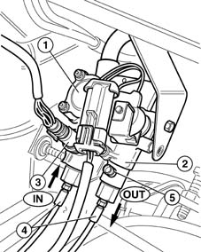
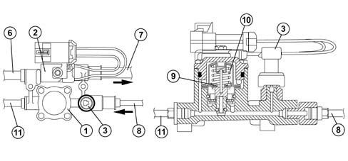

1043B gpl fuel circuit pipes
- Path
- Descriptions > 10 ENGINE UNIT > 1043 LGP TANK AND PIPES > 1043B gpl fuel circuit pipes
- Kind
- system description
- Applies to
- engines: 1.6 16v; all production periods; only with equipment: GPOWER
- Interactive page
- https://sloeber94.github.io/elrnDB-fMltpl/en/#/2888256
Applies to: engines: 1.6 16v; all production periods; only with equipment: GPOWER and Euro 3
CONSTRUCTION FEATURES
CONSTRUCTION FEATURES
The pressure regulator unit is fitted to the right side of the engine bay.
This device acts as a link between the tank and the LPG injectors. it includes the true pressure regulator (1), a cut-off or arrest solenoid (2) and an LPG pressure sensor (3).
Four hydraulic attachments on the regulation unit are used for connection of high-pressure LPG pipes (4) with adjustable fittings (banjo type).
A system seal check valve (5) is present, which also drains the section of pipe between regulator and tank (on the return line). Do not touch the valve for reasons other than those listed above.

When in operation, the pressure regulator unit takes up an intermediate position between tank and injectors.
More specifically, the device ensures that the LPG pressure in the delivery circuit (section including injectors) stays at a constant value of +5 bars in relation to the pressure in the tank.
The regulator contains a solenoid (2) that is controlled by the LPG electronic management unit.
The solenoid on the tank opens when this valve opens. The LPG is therefore driven by the action of the pump submerged in the tank, through pipe (6), through the arrest valve and on to the injectors through pipe (7).
Excess gas unused by the injectors flows through the return pipe (8) back to the regulator. Before entering, its pressure is checked by sensor (3).
The gas now enters the actual pressure regulator (1).
This component consists of a chamber divided into two parts separated by a diaphragm (9).
Tank pressure acts on the upper part via a control mechanism. A spring (10) also applies pressure to the diaphragm.
Excess LPG from the injectors flows through ducts in the lower chamber and apply pressure to the inner surface of the diaphragm.
As long as the pressure in the injector reutrn branch is lower than the return branch to the tank, the diaphragm is held closed by the spring and the pressure difference. In this case, LPG does not return to the tank. When LPG in the return branch from the injectors exercises a pressure able to overcome the force of the control spring (10) (0.5 - 1 bars), it flows through pipe section (11) into the tank.
The pump maintains LPG pressure in the delivery branch at a value of +5 bars in relation to the tank. This pressure value (+5) is sufficient to calculate the correct injection time.
